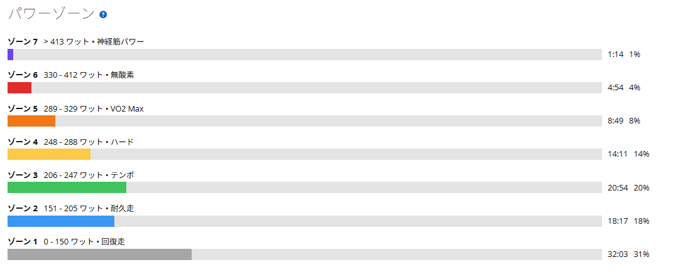

Garminに無酸素不足と言われたので、AIと明日のメニューを決めた
今日は唐沢・琴平方面を走ってきた。前日はフルレストだったので、脚はそれなりに動くだろうと思っていた。ところが実際は、脚が終わっているわけではないのに、いざ踏もうとすると力が入りにくい。
こういう日は少し気持ちが悪い。走り終わった感覚としては「今日は踏めなかった」なのに、Garminを見るとTSSは113.5。本人の気分と数字が微妙に噛み合っていない。

まとめ
- 唐沢・琴平方面を走ったが、フルレスト明けのわりに踏む感覚は悪かった。
- Garminの負荷バランスでは高強度有酸素は多く、無酸素は56で「無酸素運動不足」扱い。
- 自分のGarmin設定では、無酸素ゾーンは330〜412W。通常の300W前後ゴルビーだとVO2 Max寄りになりやすい。
- 明日は通常ゴルビーではなく、各本の最後に330W以上を入れる「無酸素寄せゴルビー」にする。
- Garminの点数稼ぎではなく、富士ヒル向けの5分高強度から外しすぎない範囲で刺激を足す。
踏めなかったのに、TSSは113
今日のライドは45.22km、1時間40分、獲得標高505m。平均パワーは178W、NPは227W、IF0.825、TSS113.5だった。数字だけ見ると、かなり軽い日というわけではない。
ただ、体感は少し違った。帰りの持続走は260〜275Wくらいを狙いたかったが、該当区間は14分49秒で平均228W。狙っていた強度には届いていない。一方で、その後に3分327Wは出ているので、脚が完全に終わっていたわけでもない。
フルレスト明けで筋肉の張りが抜けたのか、前日の日本酒2合が少し悪さをしたのか、暑さなのか。原因候補はいくつかある。ただ、今日はそこを深掘りしすぎない。酒の裁判を始めると、被告人がだいたい私になる。
Garminに無酸素運動不足と言われる
ライド後にGarminの負荷バランスを見ると、「無酸素運動不足」と出ていた。数値は無酸素56、高強度有酸素1381、低強度有酸素374。高強度有酸素はかなり入っているのに、無酸素だけが低い。
最初は翌日のメニューとして、テンポ走やSST寄り、あるいは普通のゴルビーを考えていた。でもこの表示を見ると、少し話が変わる。いつものように300W前後で5分をそろえるだけだと、Garmin的には高強度有酸素をさらに積むことになりそうだ。
もちろんGarminの表示が絶対ではない。富士ヒルで必要なのは、長く登り続ける力である。ただ、高強度有酸素が十分に入っていて無酸素が薄いなら、たまにはそこを狙うのも悪くない。
330W以上が無酸素だった
そこでGarminのパワーゾーンを確認した。私の設定では、ゾーン5が289〜329WのVO2 Max、ゾーン6が330〜412Wの無酸素、ゾーン7が413W以上の神経筋パワーになっていた。

つまり、Garmin上で無酸素を増やしたいなら、目安は330W以上。通常のゴルビーを300〜305Wくらいでやると、ゾーン5に入りやすい。これはこれで大事だが、無酸素不足への返答としては少し弱い。
とはいえ、5分間ずっと330W以上を狙うのはかなり厳しい。今日すでにTSS113.5を積んでいるので、翌日に全力で突っ込むのはあまり賢くない。そこでAIと相談して、5分走の中に330W以上を混ぜる形にした。
明日は無酸素寄せゴルビー
明日のメニューは「無酸素寄せゴルビー」にする。5分×5本で、平均は315〜325W目安。各本の最後30〜60秒だけ330W以上へ入れる。レストは5分で、120〜160Wくらいまでしっかり落とす。
5分の中身は、最初1分を320〜330W、中盤3分を300〜315W、最後1分を330〜350Wくらいのイメージ。普通のゴルビーより少し高めだが、5分すべてを無酸素ゾーンにするわけではない。
狙いは、VO2 Max系の5分高強度を残しつつ、各本の最後に330W以上を差し込むこと。Garminの「無酸素が足りません」に対して、こちらも最低限の返答はしておく。返信が遅れてすみません、明日やります、みたいな感じである。
点数稼ぎではなく、外しすぎない
ここで気をつけたいのは、Garminの負荷バランスを埋めること自体が目的にならないこと。無酸素が少ないと言われたから、急にスプリントだけをやる。それは少し違う。
富士ヒルを考えるなら、中心はやはり長く踏む力だと思っている。SST、FTP、VO2 Max寄りの練習は外せない。ただ、今の負荷バランスでは高強度有酸素がかなり多い。なら、いつもの5分高強度の中に少しだけ無酸素寄りの刺激を混ぜる。
これなら富士ヒル向けの練習から外れすぎない。Garminの点数稼ぎだけでもない。AIと喧嘩しながら、現実的な落としどころを探した結果がこのメニューだった。
明日の判断基準
明日はアップの時点で状態を見る。250Wが普通に出る、300Wに上げたときに脚が反応する、お尻が問題ない。このあたりが揃えば予定通り実施する。
逆に250Wでも重い、300Wが出ない、暑さや疲労が強い場合は下方修正する。3本で切り上げるか、300〜305Wの通常ゴルビーに落とす。練習は攻めたいが、壊れるためにやっているわけではない。
今回やってみて思ったこと
今日のライドは、気持ちよく踏めた日ではなかった。フルレスト明けなのに踏めない。脚は元気そうなのに、力を入れるスイッチが入りにくい。帰ってきたら普通に疲れている。かなりよく分からない日だった。
それでも、Garminの負荷バランスを見たことで翌日のメニューが決まった。高強度有酸素は足りている。無酸素は少ない。自分の設定では330W以上が無酸素。なら明日は、普通のゴルビーではなく少しだけ無酸素へ寄せる。
走る、数字を見る、AIに突っ込まれる、メニューを直す。これもこのブログらしい練習の一部だと思う。明日は無酸素寄せゴルビー。Garminに言われた無酸素不足へ、正面から喧嘩を売ってみる。
自分用メモ
- 今日の内容唐沢・琴平方面 / 45.22km / 1時間40分 / 獲得標高505m
- 全体負荷平均178W / NP227W / IF0.825 / TSS113.5
- 体感フルレスト明けだが持続走が噛み合わず。短時間高出力は一部出た
- Garmin負荷無酸素56 / 高強度有酸素1381 / 低強度有酸素374
- 無酸素ゾーンGarmin設定では330〜412W
- 明日の予定無酸素寄せゴルビー。5分×5本、各本の最後30〜60秒を330W以上
- 下方修正状態が悪ければ3本終了、または通常ゴルビー300〜305Wへ変更